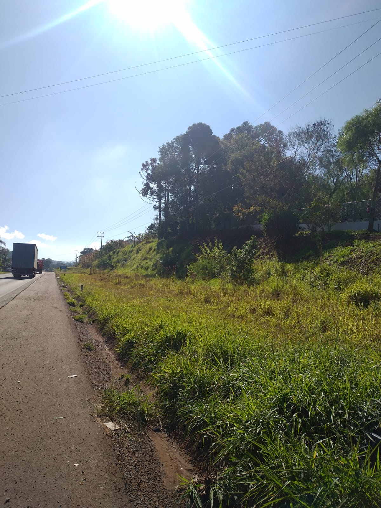

O Campo em Transformação
O campo brasileiro vive um momento de transformação. A integração entre tradição e inovação tem levado muitas comunidades rurais a ampliarem sua autonomia e capacidade de produção, sem deixar de lado a preservação ambiental e o respeito aos saberes locais.
Programas de educação rural têm desempenhado papel essencial nesse processo, garantindo que jovens e adultos do campo tenham acesso ao conhecimento necessário para enfrentar os desafios atuais. Escolas contextualizadas com a realidade rural ajudam a manter as crianças no campo e a fortalecer suas raízes.
A chegada da tecnologia, como internet de qualidade, sistemas de irrigação inteligentes e equipamentos modernos, impulsiona uma nova geração de produtores mais conectados e preparados. Essa digitalização permite que agricultores tenham acesso a mercados, previsões climáticas e boas práticas agrícolas.